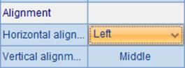
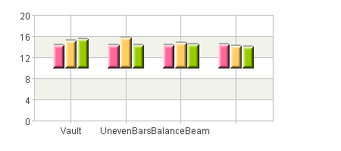

Sometimes labels need to be added to the dots in a scatter chart. In that case you can edit the text properties in the property setting interface. Modify the chart in the preceding section, for example, by setting the text properties as follows:

Set Text as the number of population, and specify the desired Text font, Text size and Text color. Thus the plotting result is as follows:

The labels are displayed above dots according to the settings.